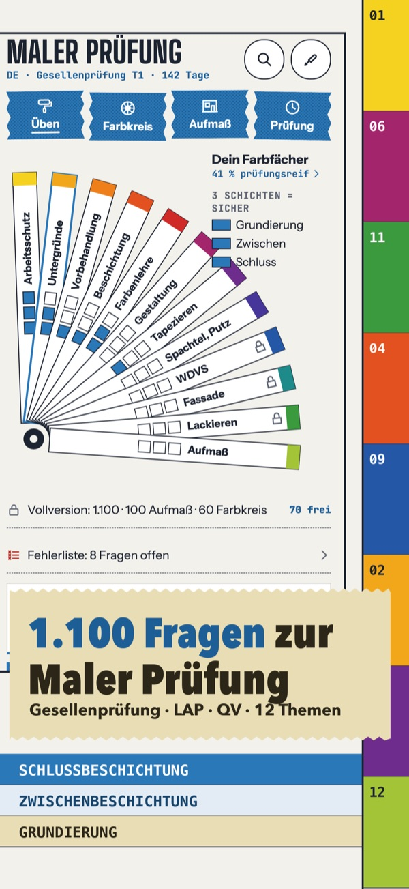
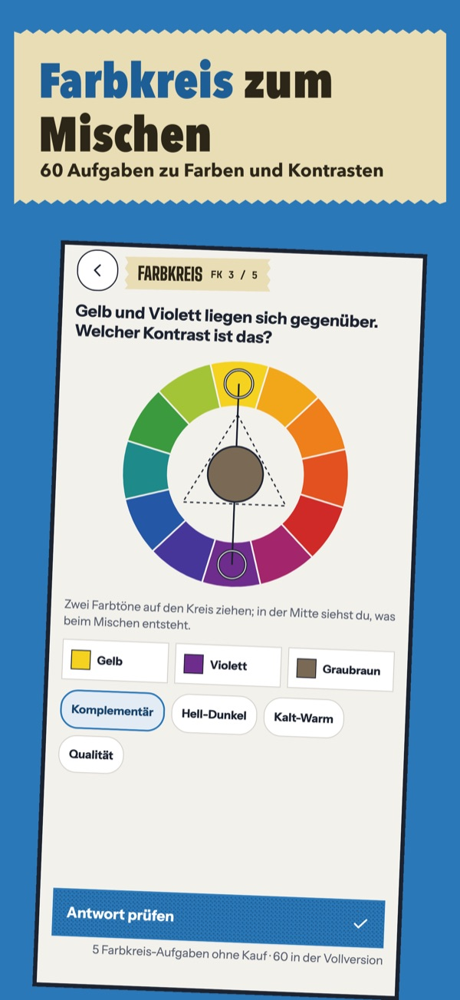
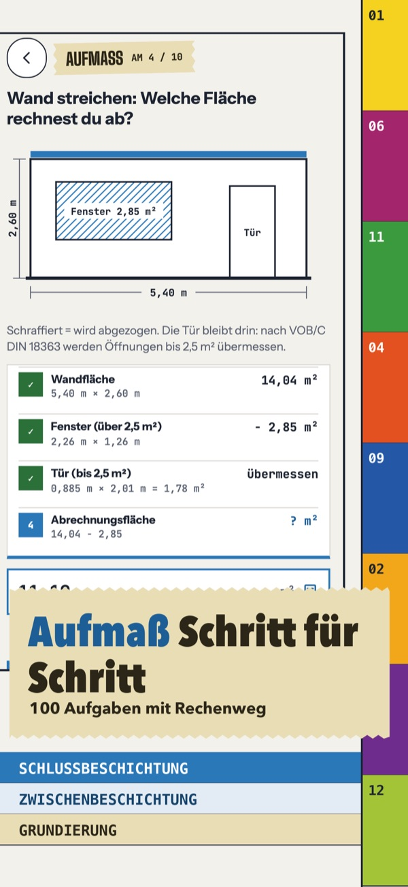

Maler Prüfung – Farbe & Fläche
Gesellenprüfung & Lackierer
Einmal kaufen – kein Abo. Maler Prüfung begleitet dich durch die Ausbildung bis zur Gesellenprüfung Teil 1 und Teil 2 (DE), zur LAP (AT) oder zum QV als Malerin/Maler EFZ (CH): Untergründe, Beschichtungsstoffe, Farbenlehre, Tapezieren, Spachtel und Putz, Dämmung, Fassade, Lackieren, Aufmaß. Die Startseite ist ein Farbfächer: jeder Streifen ein Thema, jede Schicht zeigt, was du schon kannst.



- 1.100 eigene Fragen in 12 Themen, mit Erklärung
- Fragen mit eigenen Skizzen: Gitterschnitt, Untergrundproben, Schichtaufbau
- Farbkreis-Werkstatt: Farben mischen, Kontraste erkennen, 60 Aufgaben
- 100 Aufmaß-Aufgaben Schritt für Schritt, mit Öffnungen und Abzügen
- Probeprüfungen im eigenen Übungsformat, mit Auswertung je Thema
- Fehlerliste, auch als PDF für die Berufsschule
- Erklärungen vorlesen lassen
- Deutschland, Österreich, Schweiz und alle 5 Fachrichtungen; offline, ohne Konto, Fortschritt per iCloud, Widget mit Countdown
Bald im App Store
Hilfe · Datenschutz